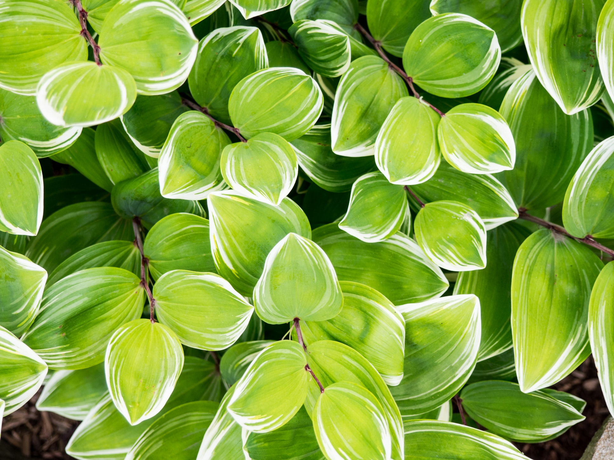

-

- 
歡迎來到 EcoFriend
我們是EcoFriend，是一個環境保護團體，成員來自全台灣關心地球環境的環保人士。自2015年成立以來，以台灣環境為立足點，透過教育與宣導嘗試將環保觀念深入民眾的心底紮根，致力以身體力行的方式推動植樹、淨灘等環境保護的活動。
經過成員們的熱誠與努力，自2016年開始放眼全世界，積極與國外的環保組織接觸並取得合作機會，講座內容也擴大至全球，期許能透過我們的努力拓展台灣民眾的環保視野，讓更多人成為環境保護人士的一員。
台北總部
最初設立的總部，以研究、舉辦講座、與國外環保團體接洽為主
台中分部
規模僅次於總部，常舉辦各種關於環保的講座與活動
高雄分部
為第二個創立的部門，以舉辦講座、與國外環保團體接洽為主
台東分部
設有研究單位，與許多大學合作，主要研究海洋相關領域
8/20 淨灘活動 八月 20, 2018 4:00 pm
歡迎加入我們一起去東海岸淨灘，台北、台中、高雄分別設有集合點，統一搭遊覽車到目的地。
活動紀錄 / Blog
30
六月
2018
世界地球日 大安森林公園植栽活動
來自全台各地的活動參與者在大安森林公園植樹。大安森林公園經營的重點之一便是修復與創造更多元的生物棲地，讓繽紛的生命能在此展現。EcoFriend自2015年創辦至今已滿三年，經過一群人...